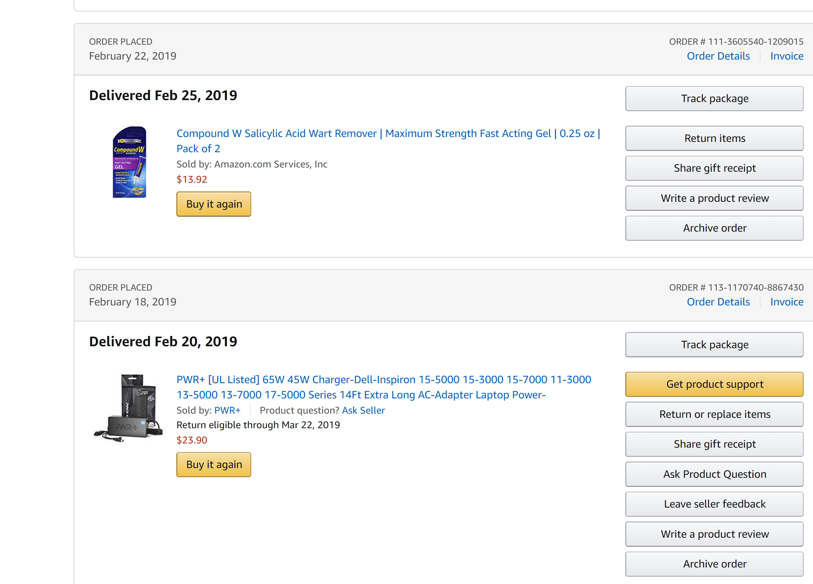

- Basic Overview -
By [FAI]
Client - Server
Apa itu client ?, Apa itu server ?
A client is a piece of computer hardware or software that accesses a service made available by a server.
The server is often (but not always) on another computer system, in which case the client accesses the service by way of a network.
- Wikipedia style
My style
Client adalah perangkat yang mengakses
Server adalah perangkat yang menyediakan
Jenis jenis client-server
> lokal
> global
Lokal
> localhost
> 127.0.0.1
> 0.0.0.0
Global
> daskomlab.com
> 153.92.4.22
Bagaimana cara client mengakses server ?
Menggunakan sebuah teknik yang dinamakan request response
Request - Response

lalu mengirim response

Development
Backend adalah sistem yang berfungsi untuk memproses setiap request yang dikirim oleh client
Analoginya: warehouse
Frontend adalah sebuah hasil dari response yang telah diperbagus atau diberi hiasan dan lain lain
SELECT new.gender, COUNT(new.gender) as 'total'
FROM
(
SELECT hobbies.id, hobbies.name, users.gender
from hobbies
LEFT JOIN map_user_hobby
ON map_user_hobby.id_hobby = hobbies.id
LEFT join users
on map_user_hobby.id_user = users.id
) as new
WHERE new.name = 'sing'
html {
width: 100%;
height: 100%;
background: #E5E5E5;
}
body {
width: 100%;
height: calc(100% - 61px);
margin: 0px;
padding-top: 5px;
background: #E5E5E5;
}
.toolbar {
position: relative;
width: calc(100% - 100px);
height: 50px;
padding-left: 50px;
margin-right: 50px;
display: flex;
flex-direction: row;
padding-bottom: 5px;
}
Deployment
Deployment adalah tahap dimana seluruh kodingan / codebase disimpan dan dijalankan dalam server pada tahap produksi(production)
- Otomatis (DevOps), Contohnya: travisci, circleci, github action, dll
- Manual, Login manual ke server, Mindahin kodingan manual dsb
Sysadmin adalah sebuah singkatan dari system administrator yaitu orang yang mengatur dan memanage sebuah server dari sebuah sistem
- Deployment
- Security
- Availability
Hacker
Hacker adalah sebuah pekerjaan yang melibatkan pengetahuan yang luas mengenai sebuah sistem lalu menggunakan seluruh pengetahuannya untuk bisa memanipulasi sistem tersebut (menggunakannya dengan cara tidak lazim / tidak biasa)
Versi salah
Versi salah

Versi salah
- Hacker use kali linux
- Hacker use termux
- Anonymous
- Cyber Army
- Hacking = Criminal
- Gampang dapet duit lewat bug hunting
- Belajarnya mati matian
- Review kodingan sampe berminggu minggu
- Suka ngoprek
- Kriminalitas tergantung keimanan
You wanna know how dedicated I was to this thing I'm working on? I reviewed 40,000 lines of DNS records, just to find that one vulnerable instance... and it paid off! 😂
— NahamSec✊🏻✊🏽✊🏾✊🏿 (@NahamSec) June 5, 2020
Nyesel saat muda masih sempet, nyesel saat tua jangan sampe
Membuat web portfolio / personal dengan github